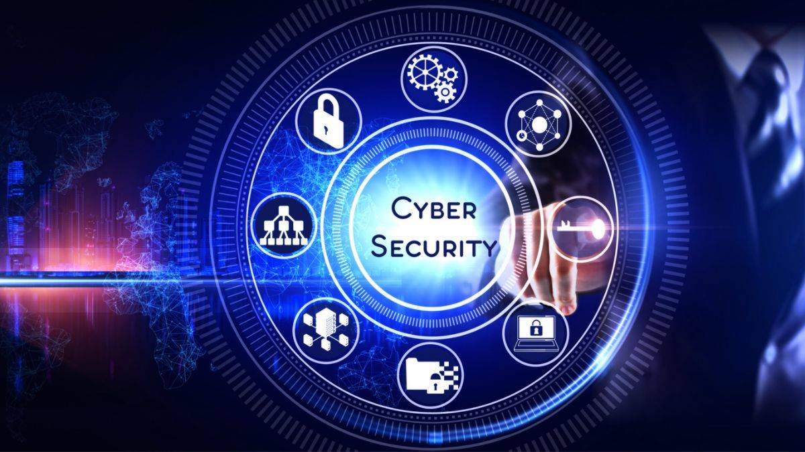

 Cybersecurity is the practice of protecting internet-connected systems such as hardware, software and data from cyberthreats. It's used by individuals and enterprises to protect against unauthorized access to data centers and other computerized systems. An effective cybersecurity strategy can provide a strong security posture against malicious attacks designed to access, alter, delete, destroy or extort an organization's or user's systems and sensitive data. Cybersecurity is also instrumental in preventing attacks designed to disable or disrupt a system's or device's operations. An ideal cybersecurity approach should have multiple layers of protection across any potential access point or attack surface. This includes a protective layer for data, software, hardware and connected networks. In addition, all employees within an organization who have access to any of these endpoints should be trained on the proper compliance and security processes. Organizations also use tools such as unified threat management systems as another layer of protection against threats. These tools can detect, isolate and remediate potential threats and notify users if additional action is needed.Automation has become an integral component to keeping companies protected from the increasing number and sophistication of cyberthreats. Using artificial intelligence (AI) and machine learning in areas with high-volume data streams can help improve cybersecurity in the following three main categories: Threat detection. AI platforms can analyze data and recognize known threats, as well as predict novel threats that use newly discovered attack techniques that bypass traditional security. Threat response. AI platforms create and automatically enact security protections. Human augmentation. Security pros are often overloaded with alerts and repetitive tasks. AI can help eliminate alert fatigue by automatically triaging low-risk alarms and automating big data analysis and other repetitive tasks, freeing humans for more sophisticated tasks. Other benefits of automation in cybersecurity include attack classification, malware classification, traffic analysis, compliance analysis and more.A vulnerability refers to a flaw in the structure, execution, functioning, or internal oversight of a computer or system that compromises its security. Most of the vulnerabilities that have been discovered are documented in the Common Vulnerabilities and Exposures (CVE) database.[6] An exploitable vulnerability is one for which at least one working attack or exploit exists.[7] Vulnerabilities can be researched, reverse-engineered, hunted, or exploited using automated tools or customized scripts.[8][9] Various people or parties are vulnerable to cyber attacks; however, different groups are likely to experience different types of attacks more than others.[10] In April 2023, the United Kingdom Department for Science, Innovation & Technology released a report on cyber attacks over the last 12 months.[11] They surveyed 2,263 UK businesses, 1,174 UK registered charities, and 554 education institutions. The research found that "32% of businesses and 24% of charities overall recall any breaches or attacks from the last 12 months." These figures were much higher for "medium businesses (59%), large businesses (69%), and high-income charities with £500,000 or more in annual income (56%)."[11] Yet, although medium or large businesses are more often the victims, since larger companies have generally improved their security over the last decade, small and midsize businesses (SMBs) have also become increasingly vulnerable as they often "do not have advanced tools to defend the business."[10] SMBs are most likely to be affected by malware, ransomware, phishing, man-in-the-middle attacks, and Denial-of Service (DoS) Attacks.[10] Normal internet users are most likely to be affected by untargeted.